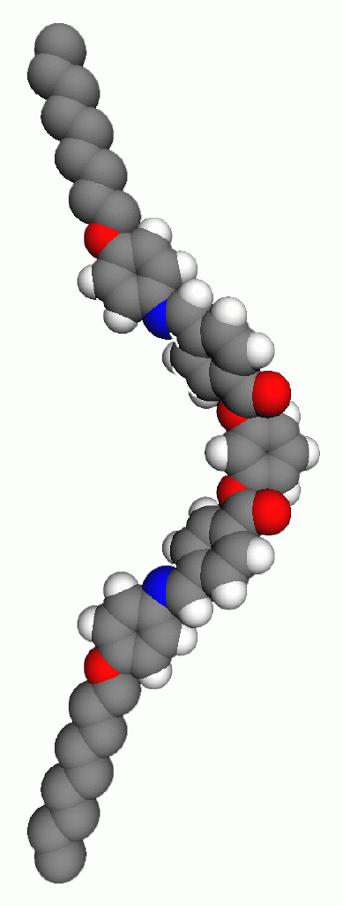
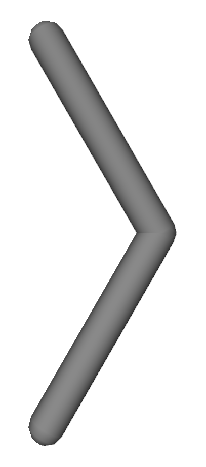

Recently a new class of liquid crystal smectic phases characterized by the spontaneous formation of macroscopic chiral domains from achiral molecules has been discovered$^1$. The molecules forming this phase are "bow" or "banana" shaped as a result of their bent core (fig. 1a). We have carried out both atomistic and idealized model simulation to investigate the properties of this new class of LC materials. Atomistic simulation allows us to probe the spontaneous polar ordering within the layer and the out-of-plane molecualr tilt leading to the formation of chiral phase. A variety of thermodynamical and structural quantities have been calculated and compared to the available experimental data. Special emphasis is given to study the effect of molecular structure of these bow shap ed molecules (e.g. flexibility) and the electrostatic interaction on the resulting bulk behaviour. To understand the mechanism which favours synclinic ordering over anticlinic ordering at a quantitative level, we have also carried out simulation of a system of hard bent core spherocylinders (fig. 1b).
 
Figure 1(a)
Figure 1(b)
(Poster presenetd at the ILCC)
page
1
page
2
page
3
page
4-5
page
6
page
7
page
8-12
page
13-16
page
17
page
18
page
19
page
20-21